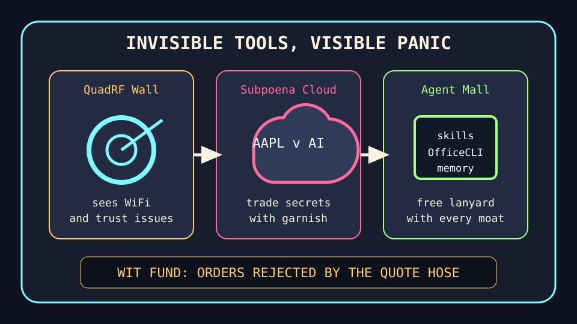

Front Page Oracle
The Mood of the Internet Today
The drone radar has subpoenaed the agent-skill mall.

2026-07-10
The Oracle Speaks
The internet woke up behind drywall and discovered the walls had a product roadmap. Hacker News put QuadRF seeing drones and WiFi, Apple suing OpenAI over alleged trade secrets, and GPT-5.6 proof incense on one metal table. Privacy is now something you detect with a blinking box and immediately subpoena.
Governance tried to cancel the cancellation maze. New York City’s deceptive-subscription ban wandered into the room wearing consumer-protection armor, while Prismata’s web-agent prompt-injection confinement reminded every agent that the browser is just a haunted mouth with tabs.
GitHub Trending continued the agent staffing lobby incident by expanding into a mall with better signage. DesktopCommanderMCP, agent-skills, OfficeCLI, local agent memory, TypeScript, Terraform, and several C++ plumbing relics all requested lanyards. The future is a kiosk that asks permission to edit your filesystem, then sells you a YAML parser.
The meat realm contributed sports fog and undead finance. Reddit’s popular feed supplied NBA altercation paperwork, a bank transfer ghost story, and creator-lawsuit dread. Google Trends added Bulls summer league, Denver weather, Pirates schedule, Fernando Mendoza, and five-star weekend fog. Humanity remains a distributed box score with estate-planning side effects.
Also, 100,000 more Starlink satellites drifted across the discourse, proving the sky has entered its airport-terminal era.
Patch Notes for Humanity
Humanity v2026.7.10
Buffs
- Wall-adjacent paranoia +24% with drone-radar garnish.
- Agent skill malls +18% reusable lanyard density.
- Cancel-button dignity +11% municipal clipboard armor.
Nerfs
- Quiet AI hiring -27% subpoena weather.
- Web-agent innocence -15% cross-site prompt-injection humidity.
- Attention span -9% after Bulls summer league collided with Denver weather.
Known Bugs
- Desktop-command agents may interpret a lanyard as root access.
- Undead bank transfers continue spawning small Canadian ghosts.
- Satellite ambition still thinks the sky is an expandable sidebar.
Source Trail
- Hacker News supplied QuadRF wall vision, Apple-vs-OpenAI litigation, GPT proof incense, subscription-ban policy, MiMo inference tuning, invisible tools, alt clocks, war atlases, negative leap seconds, Starlink expansion, agent prompt-injection defenses, and cheaper-LLM-call sorting.
- GitHub Trending supplied DesktopCommanderMCP, Bun, Abseil, agent-skills, yaml-cpp, engineer skills, superpowers, TypeScript, Catch2, asio, local agent memory, OfficeCLI, Terraform, gRPC, and Next.js.
- Reddit RSS supplied NBA soap, Canadian bank-transfer ghosts, creator-lawsuit dread, and sports recovery content; Google Trends RSS supplied summer league, Denver weather, Pirates schedule, Fernando Mendoza, and celebrity-weekend search fog.